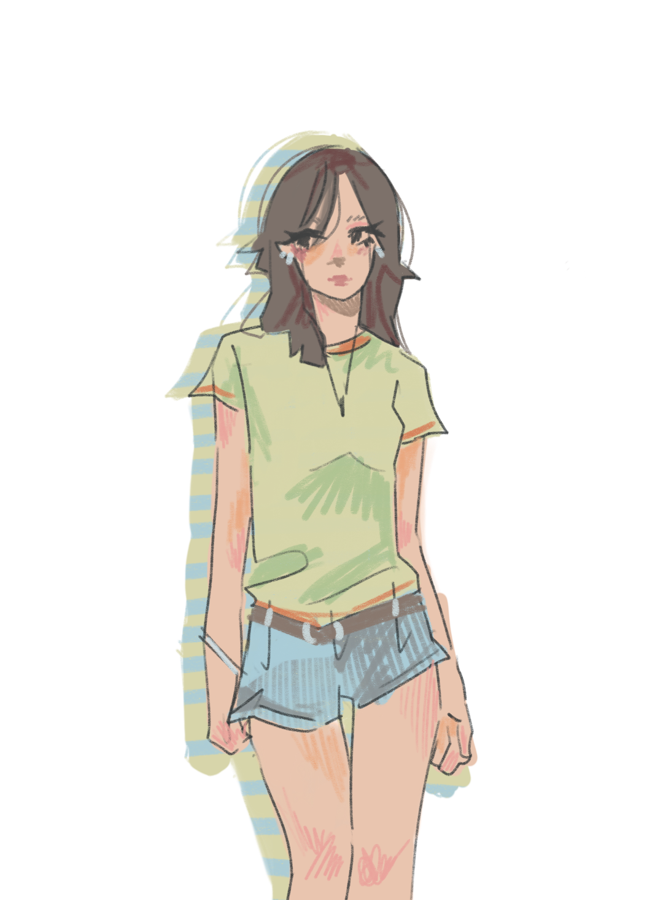
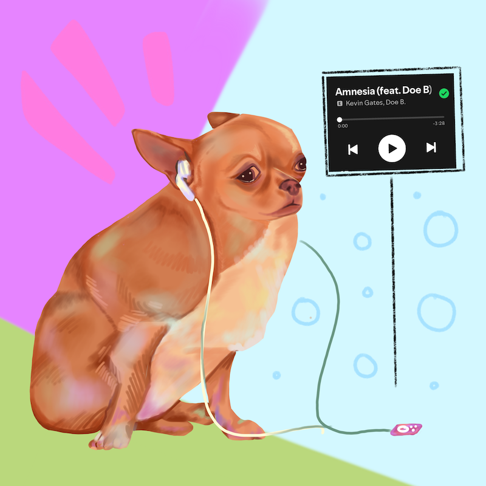

T-Day

A personal blog
This website is a personal collection of all of the things going on with me today. From the books I’ve read to my current coffee recipe, you may discover something new about me that you’ve never known before. Take a look around!
If you want to see more of my professional work and experience, check out portfolio! I have all of my art, games, and other websites on there.

I’m from Bloomington, Indiana. My favorite movie is Bottoms (2022), my favorite dessert is frozen yogurt, and my favorite color is pink. I have an orange cat named Zero who is about three years old. I consider myself an artist and computer scientist, but if I could change my career path to anything right now, I might pick marine biology.
Every morning I watch Good Mythical Morning on YouTube. If I don’t have time to be at my desktop, I will listen to old episodes of Emergency Intercom or new episodes of Absolutely Fried by Jezabelle. I love consuming all sorts of media while driving, cooking, cleaning, working out, writing emails, or laying outside. A few pages of this blog are dedicated to reviewing and ranking different types of media like games or music.